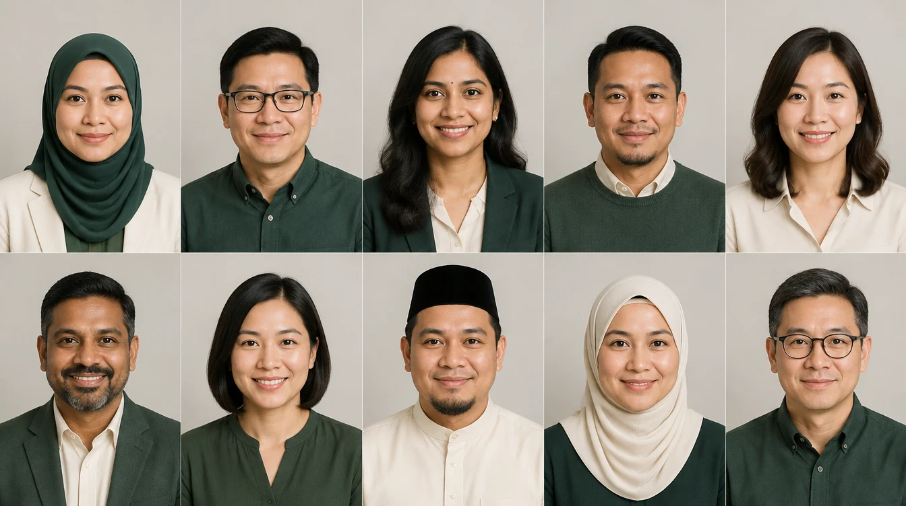

Sesuatu yang menarik untuk dikongsi
Demo yang boleh dicuba dan penerangan perkhidmatan yang mudah membantu anda memulakan perbualan yang bermakna.
Terokai ruang →IDYRA / CARERS
Idyra Carers ialah program perintis rakan rujukan kami.
Kenal pemilik perniagaan atau seseorang yang mahu menampilkan ruang mereka? Perkenalkan mereka kepada kami. Kami urus semakan projek, sebut harga dan persembahan digital.
Minat untuk program rintis kini dibuka. Kami mengalu-alukan minat daripada bakal rakan kongsi.
PENGENALAN RINGKAS. PELUANG BAHARU.
Anda tak perlu membina model 3D. Yang penting ialah kenalan yang sesuai, pengenalan yang jelas dan memahami apa yang mereka mahu tampilkan.
Demo yang boleh dicuba dan penerangan perkhidmatan yang mudah membantu anda memulakan perbualan yang bermakna.
Terokai ruang →Anda perkenalkan seseorang dengan izin mereka. Idyra menyemak keperluan, menetapkan skop kerja dan mengurus penyerahan hasil.
Lihat caranya →Terokai konsep kad digital dan bahan permulaan BM/EN. Alat rakan yang diperibadikan disediakan selepas persetujuan.
Lihat kit permulaan →KITA MULAKAN DENGAN MUDAH
Kami mengalu-alukan minat daripada mereka yang mengenali dunia kilang, kedai, kafe, pejabat atau kediaman. Kongsikan bidang yang sesuai dengan anda.
Ceritakan sedikit tentang kerja anda, kawasan anda dan jenis ruang yang anda kenali.
Kita bincangkan peranan anda, kemampuan perkhidmatan dan cara membuat pengenalan yang sesuai.
Apabila program perintis sedia, persetujui terma bertulis sebelum menerima kad peribadi dan proses rujukan.
Cadangan struktur ini tiada yuran penyertaan, pembelian wajib atau ganjaran merekrut. Sebarang bayaran rujukan akan dipersetujui secara bertulis; pendapatan tidak dijamin.
Ini berkaitan perkhidmatan persembahan digital Idyra. Rakan tidak menjual atau menyewakan hartanah, merundingkan urus niaga hartanah atau mengutip bayaran pelanggan bagi pihak Idyra.
Terma komisen dan pengaktifan rakan masih dimuktamadkan. Permohonan memulakan perbincangan, bukan pelantikan.
WAJAH BAHARU KEHADIRAN DIGITAL ANDA
Lihat reka bentuk kad dan pelbagai fokus kerja di bawah. Bayangkan cara anda sendiri boleh diperkenalkan.
Sepuluh profil ini ialah contoh reka bentuk rekaan dengan potret janaan AI. Mereka bukan rakan berdaftar, testimoni atau bukti jualan.

Pratonton rekaan
Persembahan gudang
Pratonton rekaan
Pasukan projek industri
Pratonton rekaan
Ruang komersial
Pratonton rekaan
Persembahan kilang
Pratonton rekaan
Pemasaran pemaju
Pratonton rekaan
Pengenalan PKS
Pratonton rekaan
Persembahan pejabat
Pratonton rekaan
Komunikasi projek
Pratonton rekaan
Pemasaran visual
Pratonton rekaan
Pendidikan komuniti
Kisah anda sendiri boleh ditampilkan di sini selepas kita bersetuju untuk bekerjasama.
Mari bincangkan penyertaanKENALI DENGAN LEBIH DEKAT
Kenali perkhidmatan dan bahan contoh dengan lebih dekat sebelum anda memohon.
IDYRA / RAKAN
Ceritakan kerja anda dan jenis ruang yang anda kenali. Permohonan memulakan perbincangan; ia tidak melantik anda atau menerima terma komisen.
Hantar maklumat anda secara peribadi kepada Idyra. Nombor rujukan dipaparkan hanya selepas permohonan disimpan.
Maklumat anda dihantar ke WhatsApp apabila anda membukanya. Idyra menerima mesej hanya selepas anda menekan Hantar.
NAK BERBUAL DAHULU?
Ini membuka perbualan WhatsApp dengan Idyra. Ia tidak mencipta akaun, mendaftarkan anda sebagai rakan atau menerima terma komisen. Kongsi maklumat anda sendiri sahaja; perkenalkan orang lain hanya dengan izin mereka.
Cara kami mengendalikan maklumat pertanyaan →